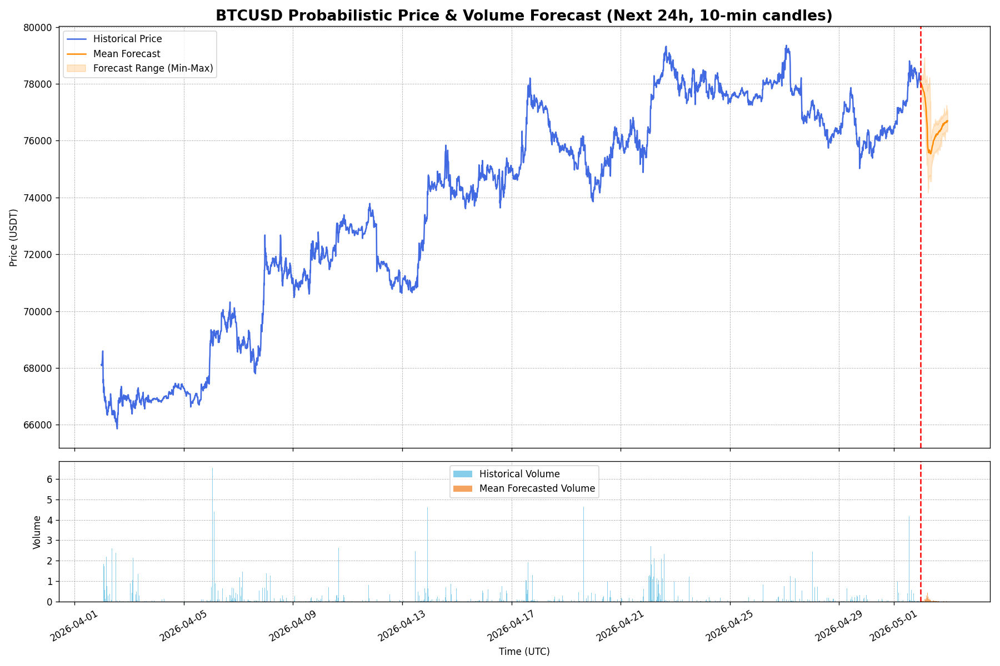
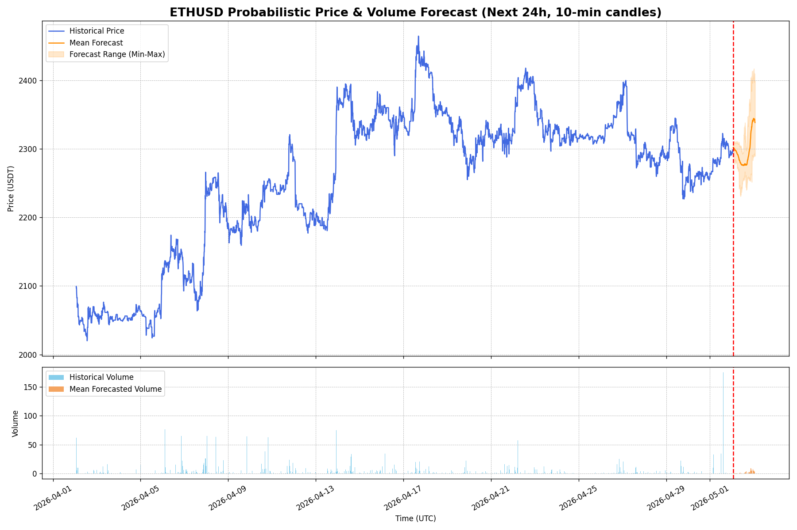

BTC/USD · Forecast Snapshot
Upside Probability · 24h
0.0%
The model's confidence that BTC will trade higher 24h from now than it does at the moment of forecast.
Volatility Amplification · 24h
93.3%
Probability that realized BTC volatility over the next 24h exceeds the trailing 24h baseline.

ETH/USD · Forecast Snapshot
Upside Probability · 24h
90.0%
The model's confidence that ETH will trade higher 24h from now than it does at the moment of forecast.
Volatility Amplification · 24h
80.0%
Probability that realized ETH volatility over the next 24h exceeds the trailing 24h baseline.

Methodology
- Model —
Kronos-Base(102M parameters), autoregressively predicting future K-lines. - Display history — 30 days (720h) of 10-min BTC/USD and ETH/USD candles from Binance.US, resampled from native 5-min data, plotted on the chart.
- Model context — the last 512 of those candles (~85h) is fed to Kronos-Base. The model's
max_contextis 512, so the full 720h cannot be passed in a single forward pass. - Sampling — Monte Carlo with N=30 paths, generating a distribution of possible 24h trajectories rather than a point forecast.
- Compute — inference runs on a Kaggle Kernel (free T4 GPU), scheduled every 12 hours. Results are pushed back to this repo and served by GitHub Pages.
- Outputs — mean forecast (orange line), full min–max envelope across paths (shaded band), and the two probability metrics above.